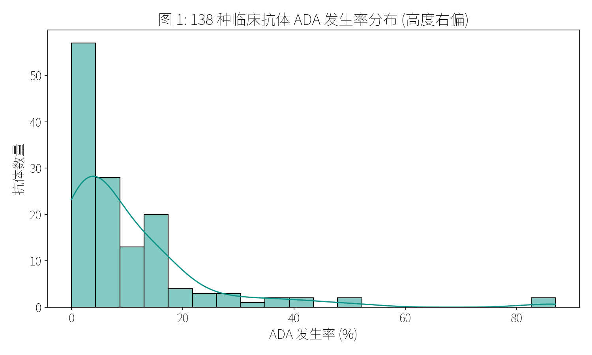
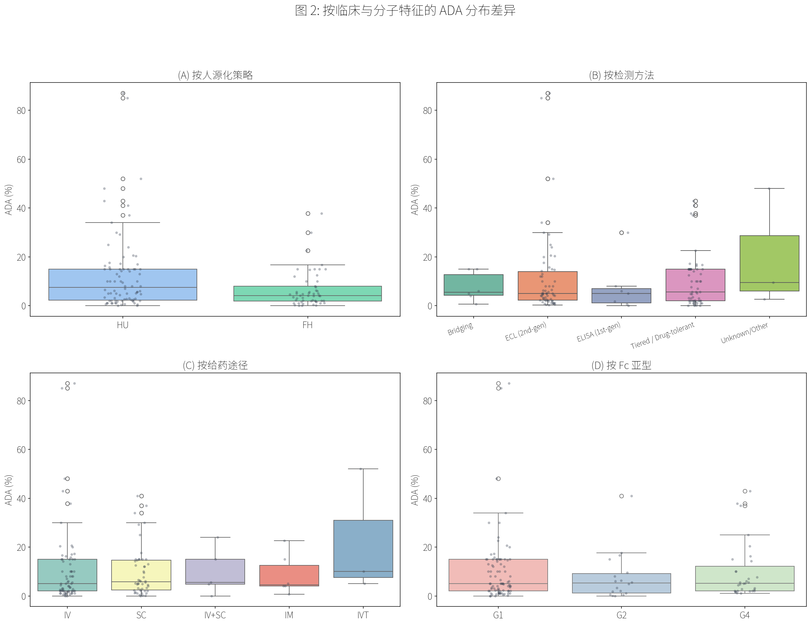
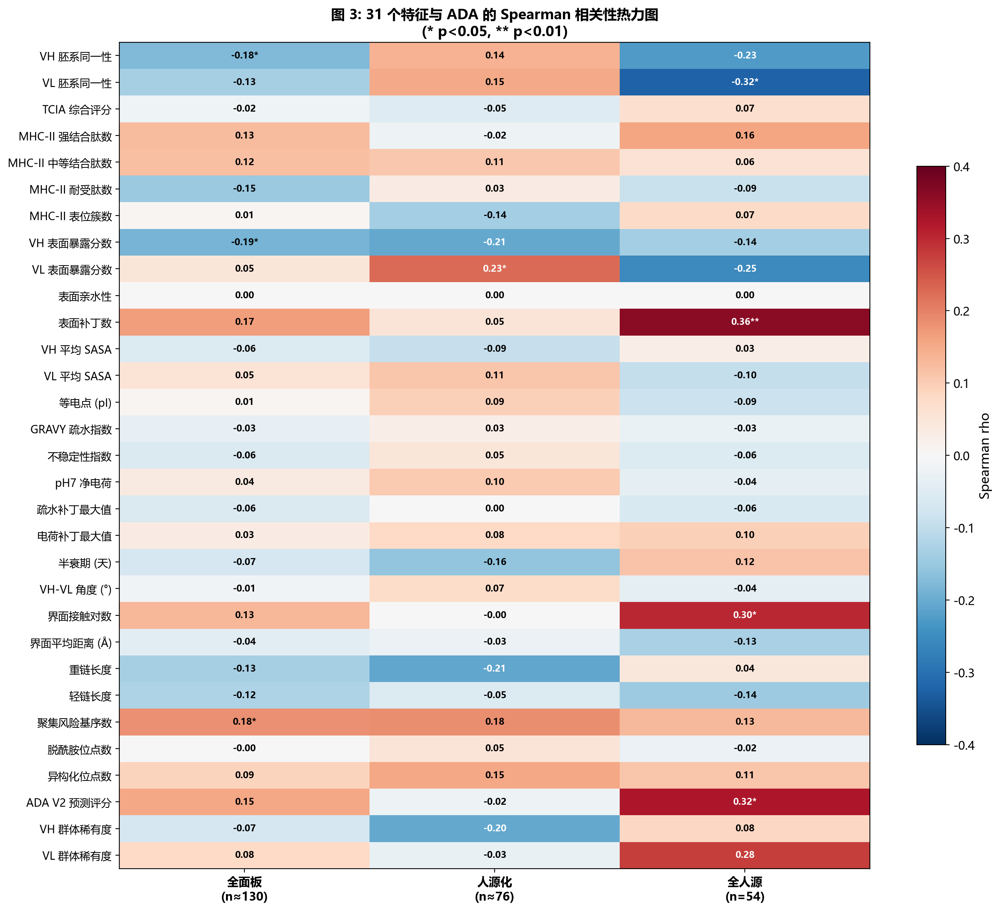
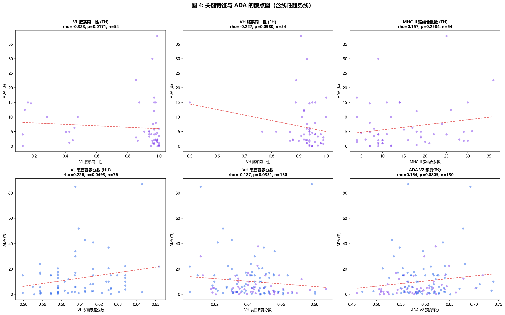
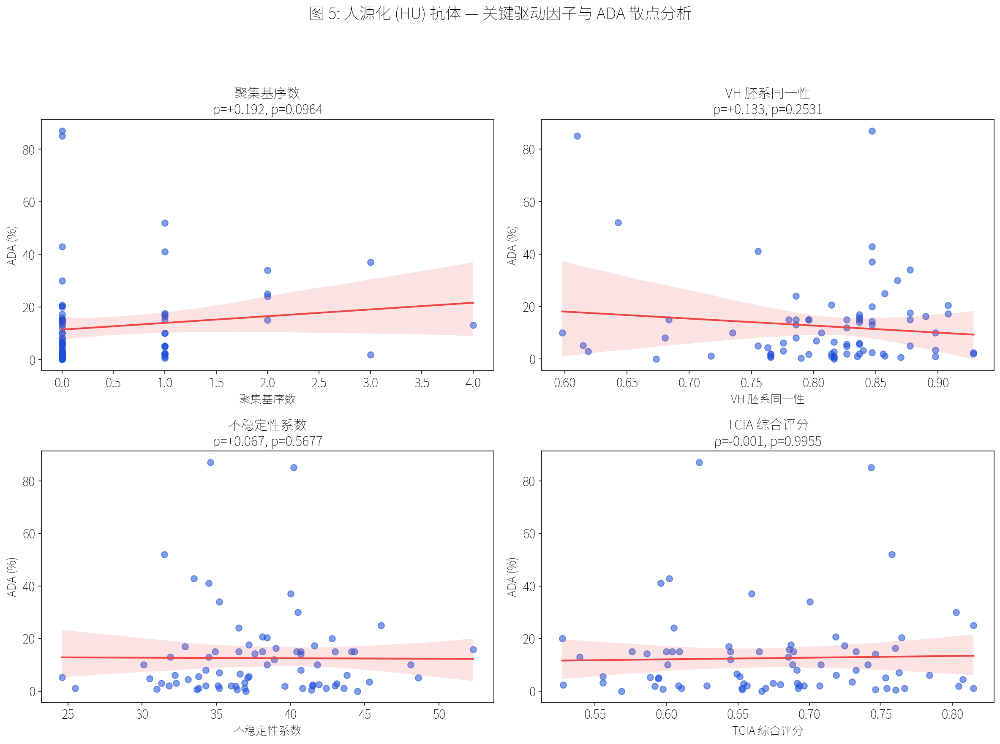
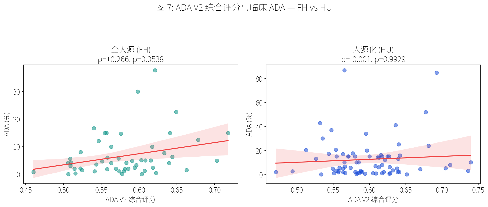
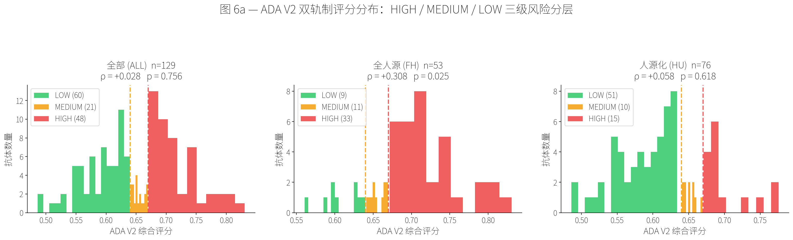
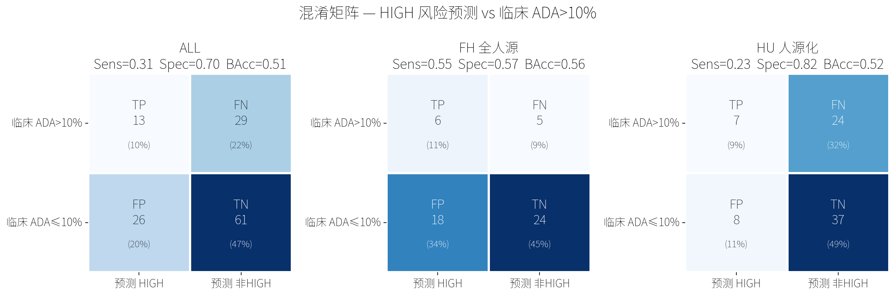
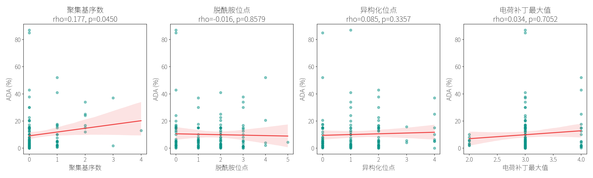

临床校准的免疫原性评估：我们的平台以 138 条真实 ADA 临床记录为基准，提供比纯粹计算评分更有价值的背景分析——帮助团队在早期识别高风险表位，制定减免策略。
支持评估任意治疗性抗体序列，包括人源化候选、VHH 纳米抗体及双特异性格式。结果与 138 条临床抗体的历史 ADA 率对标，通常 3–5 个工作日交付。
免疫原性预测与 ADA 研究
以临床 ADA 数据为基准的治疗性抗体免疫原性评估。
138 条 ADA 记录
来自批准及临床阶段治疗性抗体的真实世界免疫原性数据，覆盖多种适应症与给药方案。
27 个 HLA-DR 等位基因
基于 IEDB API 的 MHC-II 结合预测，覆盖全球主流 HLA-DR 等位基因，捕捉广谱人群风险。
多维度风险评分
将序列、结构、表面暴露与种系距离整合为一个综合评分，并与临床 ADA 率对标校准。
研究概况
Therasik 免疫原性研究分析了 138 种治疗性抗体——涵盖单克隆抗体、融合蛋白和抗体片段——建立了计算免疫原性预测与临床 ADA 率之间的相关性模型。
我们的研究揭示了全人源（FH）与人源化（HU）两类抗体的免疫原性风险由完全不同的机制驱动，因此建立了 ADA V2 双轨制预测模型，分别使用不同的评估参数与权重体系。
图 1: ADA 发生率分布 — 全部 138 种 / 人源化 (HU) / 全人源 (FH)

图 2: 按人源化策略、检测方法、给药途径与 Fc 亚型的 ADA 分布差异

全人源抗体通过噬菌体展示或转基因小鼠技术获得，其 CDR 经由体细胞高频突变（SHM）进化，框架区完全人源。其 ADA 风险不来自外源序列，而来自分子结构本身的物理瑕疵：界面不稳定性与疏水斑块的暴露。
① 界面接触归一化上限由 60 → 100（FH 均值 ≈ 71，旧标准使近乎所有 FH 抗体 I = 1.0，失去区分度）；
② VL 种系偏离改为 (1 − VL_identity) × 0.20（旧调制量范围仅 ±0.004，近乎零贡献）。
修正后 FH 综合评分首次达到统计显著，与临床 ADA 正相关（p = 0.024），可媲美最强单一预测因子。
图 3: 31 维特征与 ADA 发生率的 Spearman 相关性全景图

图 4: FH 抗体——界面接触、种系偏离、疏水斑块与 MHC-II 表位散点分析

人源化抗体通过 CDR 移植将鼠源互补决定区嫁接至人源框架。其 ADA 风险不仅来自外源 CDR 肽段，更来自三个工程特有的"设计陷阱"：Vernier Zone 残留、CDR-FR 接头（Junction）表位，以及人源化引发的分子不稳定性。临床干预（如 MTX 联用）会显著压制表观 ADA，使分子层面的相关性信号在统计上较弱——这正是 HU 评估需要专项系统的根本原因。
图 5: HU 抗体——聚集基序、种系一致性、不稳定性与 TCIA 评分散点分析

ADA V2.1 综合评分：FH vs HU 的预测效力对比
ADA V2.1 综合评分将多维特征加权整合为单一风险指标。在 FH 子集中，综合评分与临床 ADA 呈显著正相关（ρ=+0.308, p=0.025），相关性较 V2.0 进一步提升。本次权重更新的关键改进：基于 FH 深度扫描结果，将界面接触密度 (I) 权重从 20% 提升至 35%，表面斑块 (P) 权重从 25% 提升至 30%，并引入了 FH 专项 Midpoint 修正（0.32）以平衡风险分级。HU 子集中因临床免疫抑制剂的广泛使用，表观信号被压低（ρ≈0）——这恰恰验证了双轨制的必要性。
图 6: ADA V2 综合评分与临床 ADA — FH vs HU 对比

ADA V2 双轨制 Benchmark — 138 条临床记录对标
| 轨道 | n | ρ (Spearman) | p 值 | AUC-ROC | 均衡准确率 | 灵敏度 | 特异性 |
|---|---|---|---|---|---|---|---|
| 全部 (ALL) | 129 | +0.088 | 0.319 | 0.511 | 0.505 | 0.310 | 0.701 |
| FH 全人源 ✓ | 53 | +0.308 * | 0.025 | 0.690 | 0.566 | 0.727 | 0.405 |
| HU 人源化 | 76 | +0.058 | 0.618 | 0.505 | 0.524 | 0.226 | 0.822 |
* 临床 ADA>10% 为阳性；HIGH 风险等级为预测阳性。FH 轨道已达统计显著。HU 信号被临床免疫抑制剂压低（见 HU 专项分析）。

图 6c — 混淆矩阵（HIGH 风险预测 vs 临床 ADA>10%）— ALL / FH / HU 分组

图 6b — ROC 曲线（FH AUC=0.690 / HU AUC=0.505）

图 6d — 散点图：ADA V2 综合评分 vs 临床 ADA 发生率
CMC 可开发性特征：FH 与 HU 的共通风险
无论 FH 还是 HU，聚集基序和疏水斑块在全样本面板中均维持正相关（全面板 ρ=+0.177, p=0.045），为早期 CMC 筛选提供了共通的免疫学风险依据。检测方法分层（Kruskal-Wallis p=0.852）证实这一相关性不受检测代际偏差影响。
图 7: CMC 可开发性特征（聚集基序、脱酰胺等）与 ADA 的跨抗体形式关联

预测方法
Therasik 免疫原性评估流程整合了互补的多层次分析，并在最终报告中根据抗体类型自动切换 FH / HU 专项权重体系：
- IEDB MHC-II 深层扫描 — 覆盖 27 个 HLA-DR 等位基因；HU 专项额外扫描 Vernier Zone（VH/VL 各 ~10 个位置）和 CDR-FR 接头（每个 CDR 两端各 5 个残基）的降解肽段。
- 风险位点聚类 — 识别空间聚集的 T 细胞表位热点，区分孤立弱信号与功能性强表位簇。
- 表面暴露评估 — Parker 亲水性评分 + SASA 分析（提供 PDB 时）；FH 专项侧重表面疏水斑块数量。
- 种系耐受过滤 — IGHV/IGKV/IGLV 频率加权过滤，识别人类非自身残基；HU 专项额外评估 Vernier Zone 残基的人源化程度。
- ADA V2 双轨综合评分 — 根据输入序列类型（FH/HU）自动选择权重矩阵，输出分层风险评分（低/中/高），并与 138 条临床记录对标。
所有评分均与 Therasik ADA 数据库中的 138 条临床记录对标，提供分位数排名和基准比较（如 Herceptin®、Humira® 等标杆抗体）。
ADA 参考数据库
Therasik ADA 数据库是我们免疫原性评估的校准基础，收录来自临床研究和上市后监测的 ADA 数据：
- 覆盖格式 — 单克隆抗体（IgG1/2/4）、Fab 片段、融合蛋白、双特异性抗体
- 适应症覆盖 — 肿瘤学、自身免疫、代谢疾病、神经系统疾病
- 数据维度 — ADA 发生率、中和抗体比例、给药方案、联合用药信息
- 人源化程度 — 嵌合体、CDR 移植、完全人源化，各类别均有样本
该数据库支持我们的预测模型针对特定治疗类别和分子格式进行分层校准。
提交免疫原性评估咨询
提交您的抗体序列，获取临床基准校准的免疫原性评估报告。
联系方式
如有问题，请发送邮件：contact@therasik.com
我们通常在 1–2 个工作日内回复。